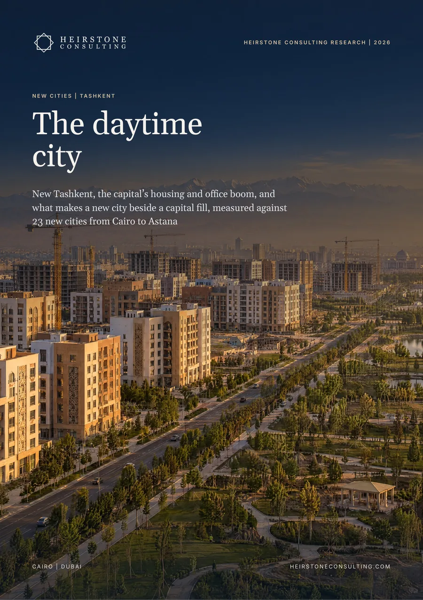

Real Estate Strategy
New Tashkent, the capital's housing and office boom, and what makes a new city beside a capital fill, measured against 23 new cities from Cairo to Astana.
Also available in Russian: Новые города Узбекистана: Дневной город. Choose the language when you request the report.

The report in six numbers
decreed for New Tashkent in 2023, east of the capital. The first 6,000 ha are planned for 600,000 people.
of the flats Tashkent must commission in 2026-2028 are assigned to New Tashkent: 67,000 of 135,676 (Heirstone analysis of Decree PF-29)
of Uzbekistan's new housing was built in Tashkent city in 2025, which produces 19.9% of GDP and takes about 31% of mortgage lending
of a city-centre flat bought by a month's net salary in Tashkent, more than in Almaty, Baku, Tbilisi or Istanbul (Heirstone Capital Housing Index, on crowd-sourced Numbeo data)
of Tashkent's fixed investment was funded by foreign investment and loans in 2025, against 15% in 2018
civil servants moved to Egypt's New Administrative Capital in 2023 (Cairo Governorate), after its 70 km light rail line opened in 2022
In brief
We assembled the decrees, accounts and project records for New Tashkent, Tashkent's housing, mortgage, office and hotel data, prices in six peer cities and a benchmark of 23 new cities and capitals from Brasília to Alatau.
Resolution PP-232 of 2023 set aside 19,720.9 ha east of the capital. By late 2026 seven facilities worth US$1bn had been commissioned, including about 7,000 flats, 54 lots had been sold and officials put investment above US$2bn. More than ten ministries were working on site by 2025.
Decree PF-29 assigns New Tashkent 67,000 of the 135,676 flats Tashkent must commission in 2026-2028, or 49%. Its 2026 target of 1.2m m² exceeds all the housing Tashkent city commissioned in 2025, 1.0m m², in a city that produces 19.9% of GDP but built 6.3% of the country's new housing.
Resale flats average about US$1,133 per m², below Tbilisi, Almaty, Baku and Istanbul. Mortgages cost 17-24% against gross rents of about 9%, state channels funded 89% of new-build mortgages in 2025, and the UZS 480m subsidy cap fits a flat of about 42-48 m².
Foreign investment and loans funded 57% of Tashkent's fixed investment in 2025. China supplied 28% of the city's foreign investment in the first nine months of 2025. Gulf-based Vision Invest holds 45% of the consortium building the new airport.
In our benchmark of 23 new cities, those that moved government or large employers in early, with rail, filled fastest. Egypt's New Administrative Capital opened its light rail in 2022, moved 40,000 staff in 2023 and, according to its city company, has nearly 30,000 residents. New Tashkent has scheduled its metro, campuses and stadium for its largest housing years.
What it means
Tie each tranche of homes to staff relocations and transit, and publish quarterly counts of residents, staff and students on site.
Design to the mortgage cap and to the daytime population of staff, students and visitors.
Fund the transit links and dollar-funded rental housing.
Lengthen som funding and price by income, as Egypt's social housing fund does.
Inside the full report
Heirstone datasets
new cities and capitals in the Heirstone New City Benchmark, with New Tashkent measured against them
conditions in the Heirstone Fill Test for a new city beside a capital
peer cities in the Heirstone Capital Housing Index, from Almaty and Baku to Tbilisi and Istanbul
Built from public sources current at October 2026. Every figure is referenced in the report, and figures we derive by combining published numbers are labelled Heirstone analysis.
A new city decreed in 2023 on 19,720.9 ha east of Tashkent and built by a Directorate under the Cabinet of Ministers. The first 6,000 ha are planned for 600,000 people. By late 2026 seven facilities worth US$1bn had been commissioned, including about 7,000 flats, and more than ten ministries were working on site by 2025.
It is cheap to buy and costly to borrow. Resale flats average about US$1,133 per m², below Tbilisi, Almaty, Baku and Istanbul, and a month's net salary buys 0.44 m² of a city-centre flat on crowd-sourced Numbeo data. Mortgages, however, cost 17-24% against gross rents of about 9%.
Its workday. In the Heirstone New City Benchmark of 23 new cities, those that moved government or large employers in early, with rail, filled fastest. Egypt's New Administrative Capital opened its light rail in 2022 and moved 40,000 staff in 2023.
Real Estate Strategy
Heirstone Consulting Research
Tell us what you are deciding and by when. A senior adviser replies within one business day.
Contact us